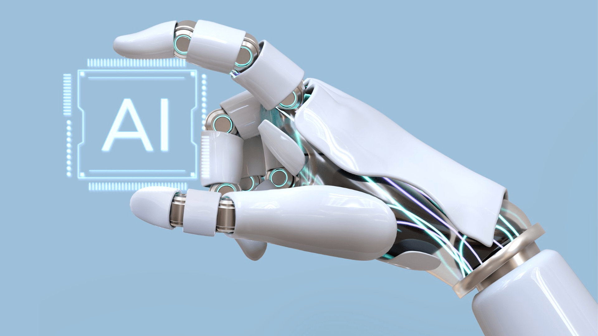

Machine Learning (ML) is a branch of artificial intelligence (AI) that enables computers to learn from data and improve their performance on tasks without being explicitly programmed. Instead of following fixed rules, ML algorithms identify patterns and make predictions or decisions based on input data.
There are three main types of ML: Supervised Learning – The model learns from labeled data (e.g., predicting house prices from past data). Unsupervised Learning – The model finds patterns in unlabeled data (e.g., customer segmentation). Reinforcement Learning – The model learns by interacting with an environment and receiving feedback (e.g., game playing agents).
ML is widely used in applications like recommendation systems, image recognition, natural language processing, and fraud detection.
Artificial Intelligence (AI):
AI learning refers to how machines gain knowledge and improve performance using data and algorithms. The main types of AI learning are:
**Supervised Learning** – the model learns from labeled data. 2. **Unsupervised Learning** – the model finds patterns in unlabeled data. 3. **Reinforcement Learning** – the model learns through trial and error, receiving rewards or penalties.
AI learning helps machines recognize speech, predict outcomes, and automate tasks. It is widely used in applications like chatbots,
recommendation systems,and image recognition. AI continues to evolve, making technology smarter and more human-like.

Types of Robots
Types of Robots: Industrial Robots – Used in factories for tasks like welding and assembly. Service Robots – Used in homes or businesses (e.g. vacuum robots, delivery bots). Medical Robots – Assist in surgeries or patient care. Exploration Robots – Used in space, deep sea, or dangerous places. Humanoid Robots – Designed to look and act like humans. is the Robots